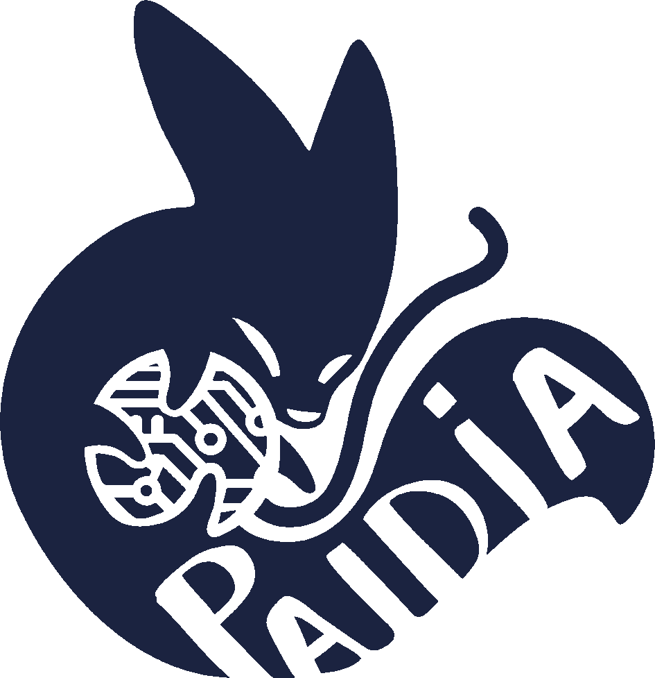
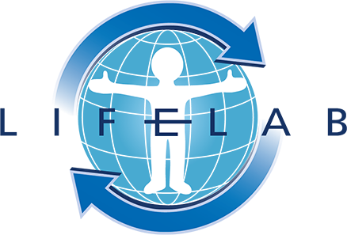
a unique research-based educational project created by the University of Southampton
Experiential learners
References: Kolb & Fry 1975; Kolb 1984
‘Embodiment is profoundly affected by action … action experience as a powerful tool for learning throughout development and into adulthood’ Kontra et al, 2012
Your body does the experiment!
Playing generates cognitive function data, using the Stroop test and ‘stroop-like’ games
The teaching uses:
The scientists get data to test their hypothesis that better cognitive function is linked to faster gut transit, and find out if games provide a fun and accurate way to assess cognitive function.
Reference: Ma et al, 2023
Gut linked to brain
Brain function can be measured
Tap the ink colour, not the word.
Built on D‑KEFS Design Fluency
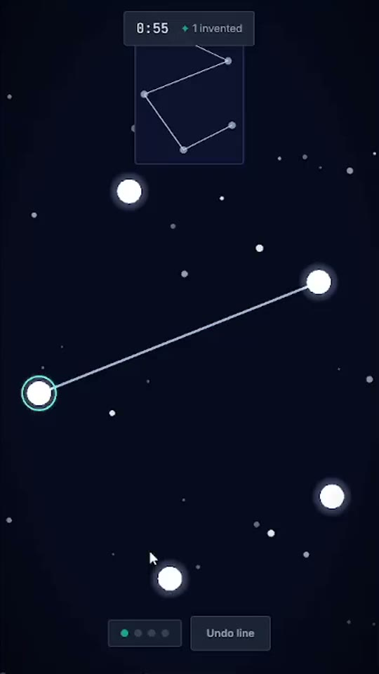
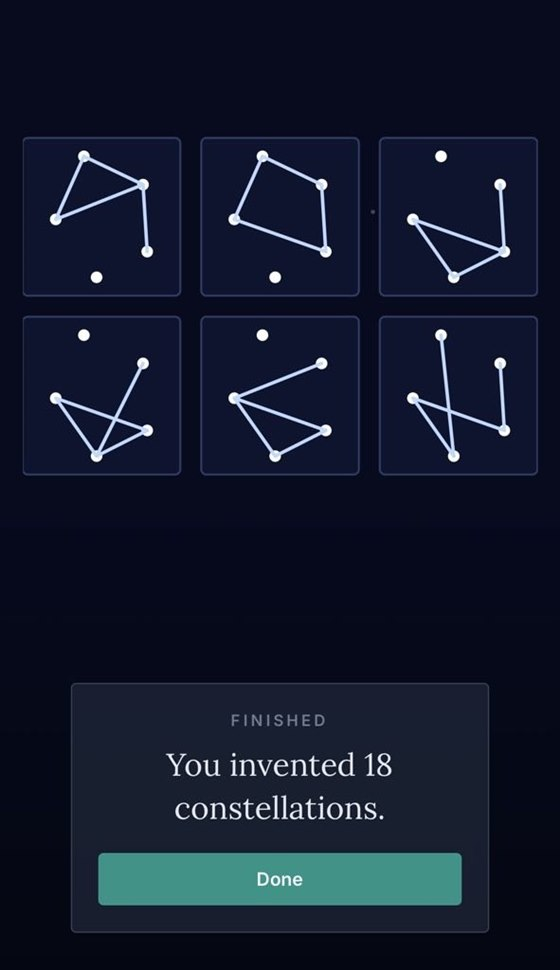
Built on the D‑KEFS Trail Making Test
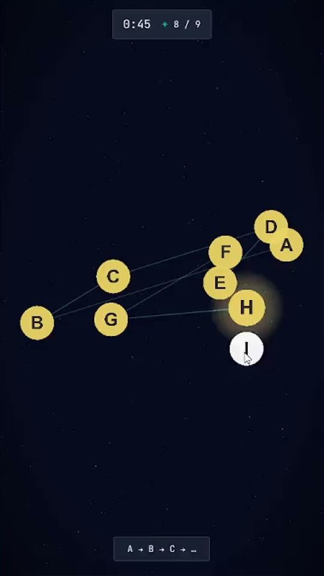
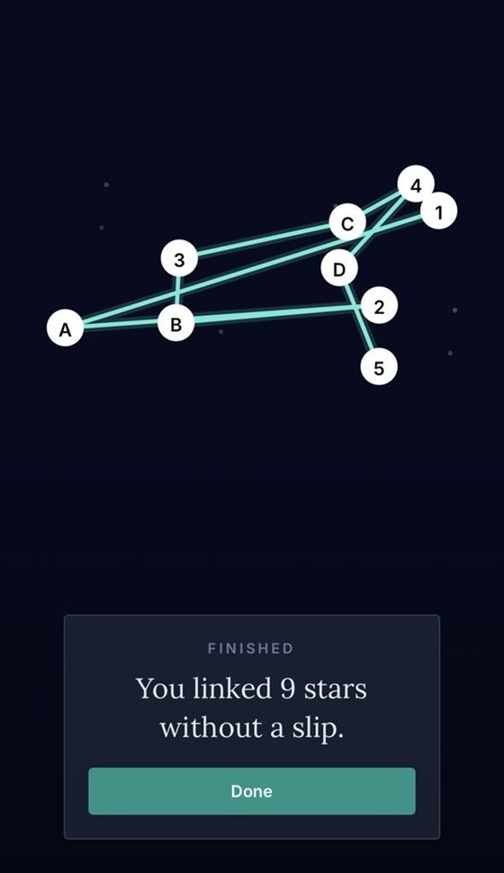
Dimensional change task switching, from the NIH Toolbox
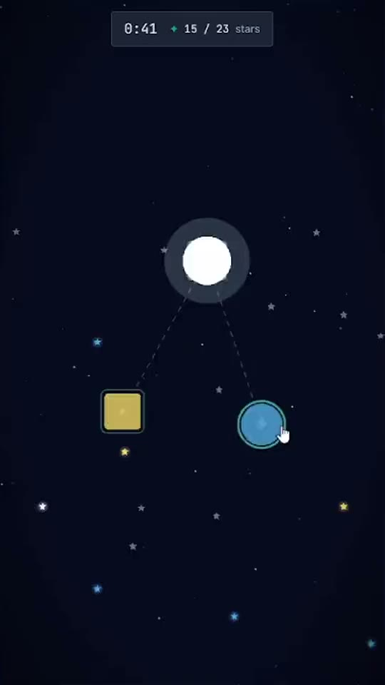
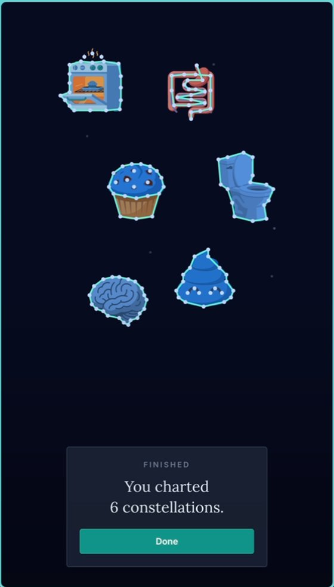
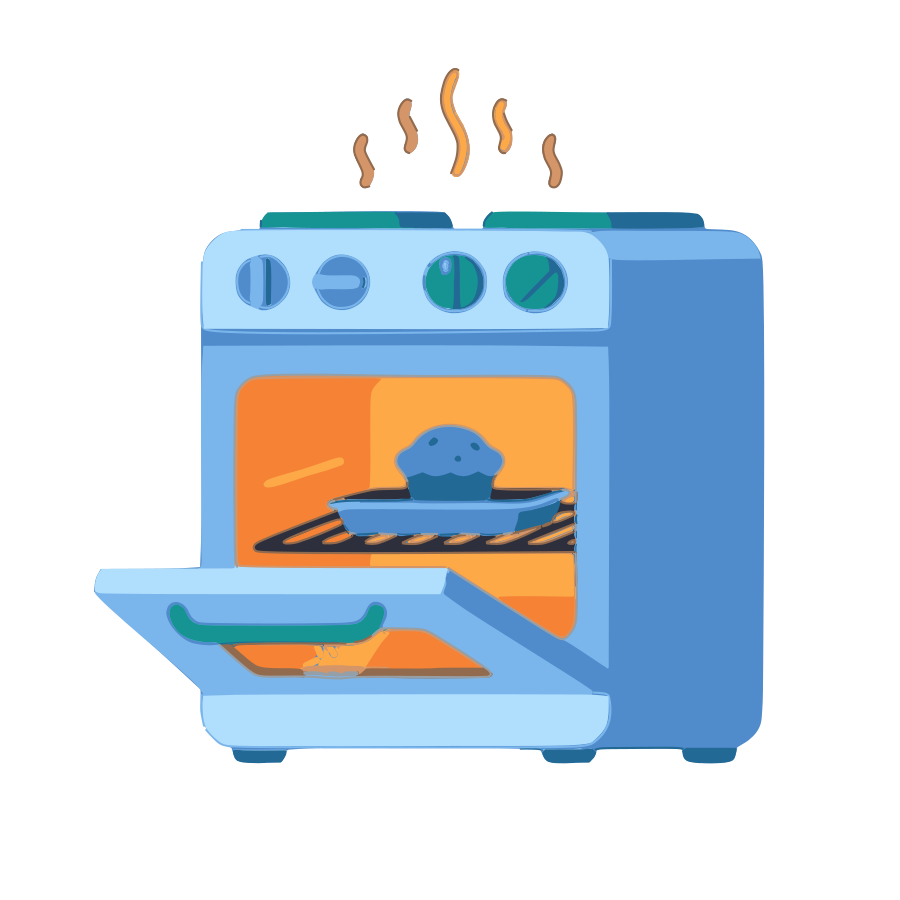
Oven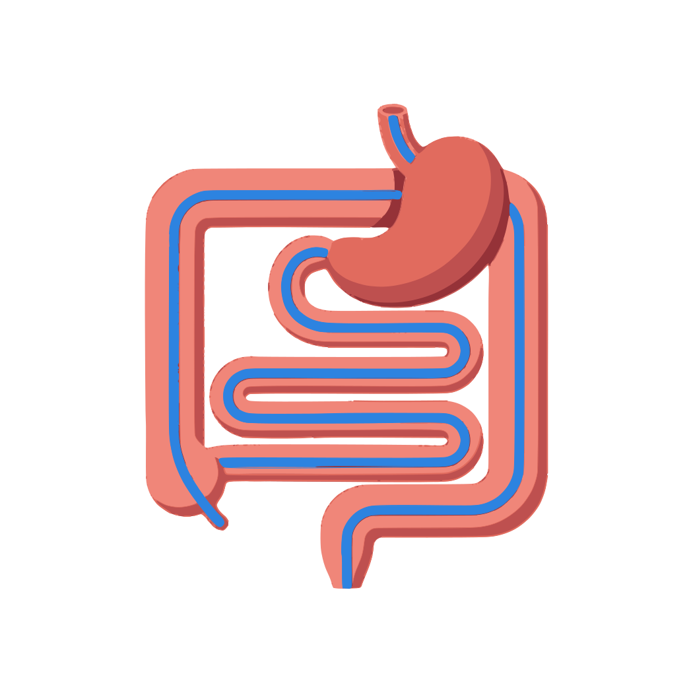
Gut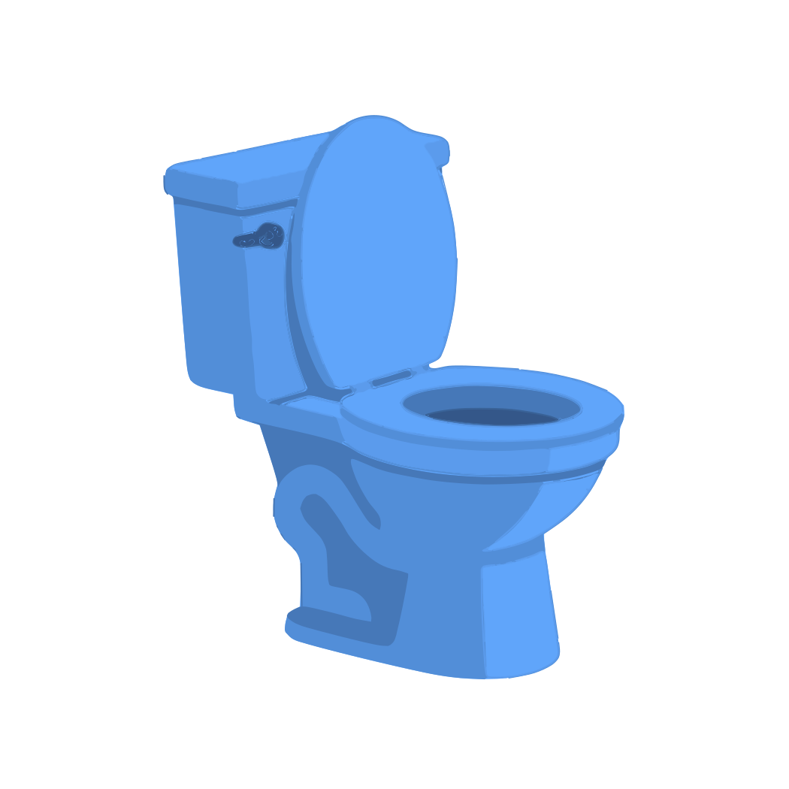
ToiletNo scores against other people. No percentiles. No brain age.
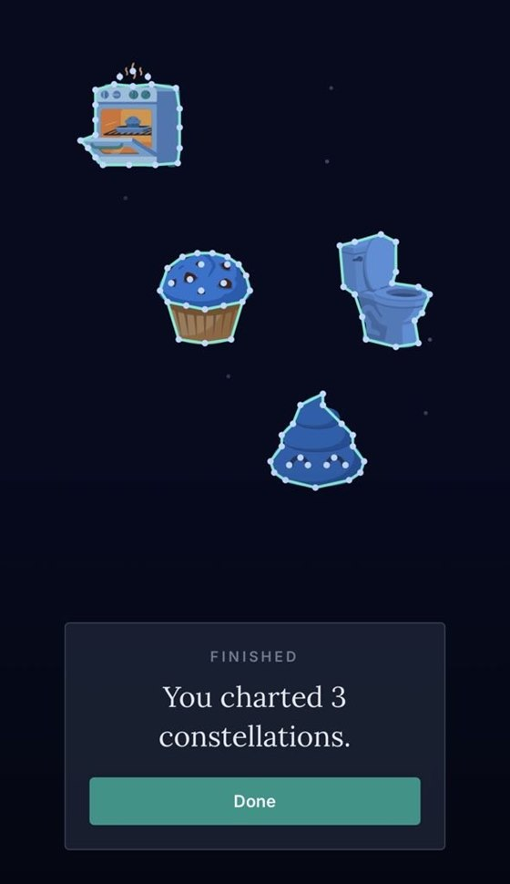
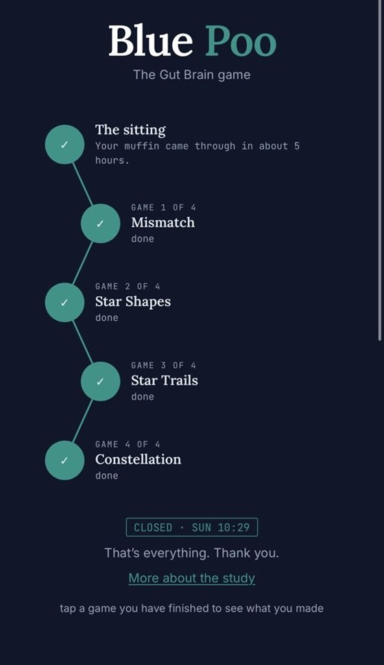
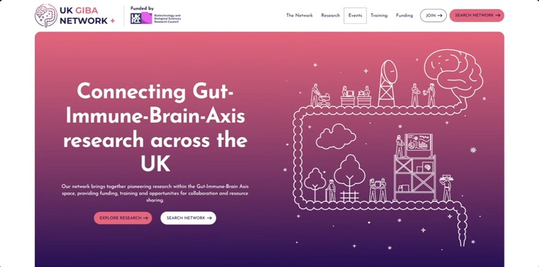
A plain-language finish card, every time.
The end of the sitting: every game done, one tap onward.
The science page: the gut-brain axis, transit time, questions to talk through.
That’s the question we are trying to answer.
Scan to play,
once the blue arrives
Scan to play,
once the blue arrives